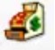
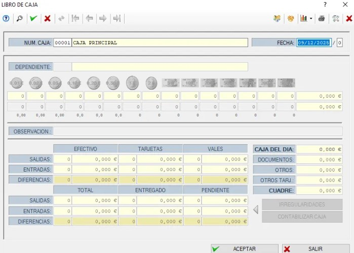

Botón de Caja

Este botón permite realizar la caja diaria, es decir, el cierre económico del día.
Seleccionar la caja principal
Al entrar:
- Pulsamos F2 en la casilla de Caja para ver todas las disponibles.
- Seleccionamos la Caja Principal o la que corresponda.
A continuación aparecerá una ventana como esta:

Dependiente y conteo de efectivo
- Indicamos el dependiente que realiza el cierre.
- Introducimos el importe que contamos físicamente en cada casilla de efectivo.
- El MAIS comparará ese importe con el total teórico.
✔️ En la casilla Cuadre, el resultado debe ser 0. Esto significa que la caja cuadra correctamente.
✔️ Finalizar la caja
Cuando el cuadre sea correcto:
- Pulsamos Aceptar
- La caja del día quedará finalizada y registrada.